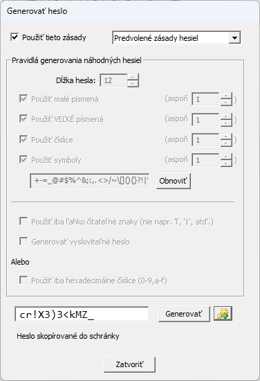
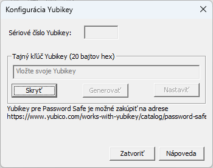
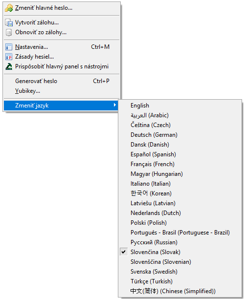

Výberom Nastavenia... sa zobrazí dialógové okno s kartami, kde je možné zobraziť a upraviť mnohé nastavenia Password Safe.
Ak sa chcete dozvedieť viac o konkrétnej karte, vyberte ju nižšie:
Toto vám umožňuje vygenerovať heslo podľa konkrétnych zásad hesiel stlačením tlačidla Generovať.
A to bez toho aby ste museli vybrať nejaký záznam a otvoriť okno s jeho vlastnosťami, a hľadať miesto kde sa normálne nastavujú heslá.
Heslo sa dá skopírovať do schránky, potom ho iná aplikácia môže zo schránky použiť.
Môžete si vybrať predvolené zásady hesiel pre aktuálnu databázu, alebo použiť vlastné zásady.

Yubikey
Toto vám umožňuje prispôsobiť si voliteľné zariadenie YubiKey tak,
aby ste ho mohli použiť na prístup k databáze Password Safe, ako aj vytvoriť záložný YubiKey pre prípad, že by sa originál stratil alebo poškodil.

Prispôsobenie vášho YubiKey
Vložte svoj YubiKey do USB slotu počítača.
Vyberte položku menu Spravovať > Yubikey.... Zobrazí sa dialógové okno Konfigurácia YubiKey.
Malo by sa zobraziť sériové číslo vášho YubiKey. Ak je toto pole prázdne, uistite sa, že váš YubiKey je správne zapojený.
Kliknite na tlačidlo Generovať. Týmto sa vytvorí 20-bajtový náhodný tajný kľúč, ktorý sa zapíše do vášho YubiKey a použije sa na prístup k vašej databáze.
Kliknite na Nastaviť. Týmto sa vygenerovaný kľúč zapíše do vášho YubiKey a dáta sa uložia v zašifrovanej forme do vašej databázy, aby ste ho mohli použiť na konfiguráciu záložného kľúča.
Ak je konfigurácia úspešná, dialógové okno sa zatvorí. Ak nie, zobrazí sa chybové hlásenie s popisom problému.
Kliknite na Zatvoriť pre zatvorenie dialógového okna.
Poznámka: Po konfigurácii vášho YubiKey musíte zmeniť heslo databázy, aby ste mohli používať YubiKey na autentifikáciu,
ako je popísané v časti Zmena hlavného hesla
Vytvorenie záložného YubiKey
Vložte záložný YubiKey do USB slotu počítača.
Vyberte položku menu Spravovať > Yubikey.... Zobrazí sa dialógové okno Konfigurácia YubiKey.
Malo by sa zobraziť sériové číslo vášho záložného YubiKey. Ak je toto pole prázdne, uistite sa, že váš YubiKey je správne zapojený.
Neklikajte na tlačidlo Generovať. Údaje zobrazené v poli "Tajný kľúč YubiKey" sú kľúčom priradeným k tejto databáze.
Toto je kľúč, ktorý bude zapísaný do vášho záložného YubiKey.
Kliknite na Nastaviť YubiKey. Týmto sa existujúci kľúč zapíše do vášho záložného YubiKey.
Ak je konfigurácia úspešná, dialógové okno sa zatvorí. Ak nie, zobrazí sa chybové hlásenie s popisom problému.
Kliknutím na tlačidlo Zavrieť zatvoríte dialógové okno.
Zmeniť jazyk

Ak ste pri inštalácii aplikácie Password Safe nainštalovali
všetky aktuálne dostupné knižnice DLL pre ďalšie jazyky (čo je predvolená hodnota), budete môcť prepínať medzi týmito jazykmi za chodu prostredníctvom tejto položky menu.
Po zmene jazyka budú všetky ponuky, dialógové okná a správy vo vami zvolenom jazyku.